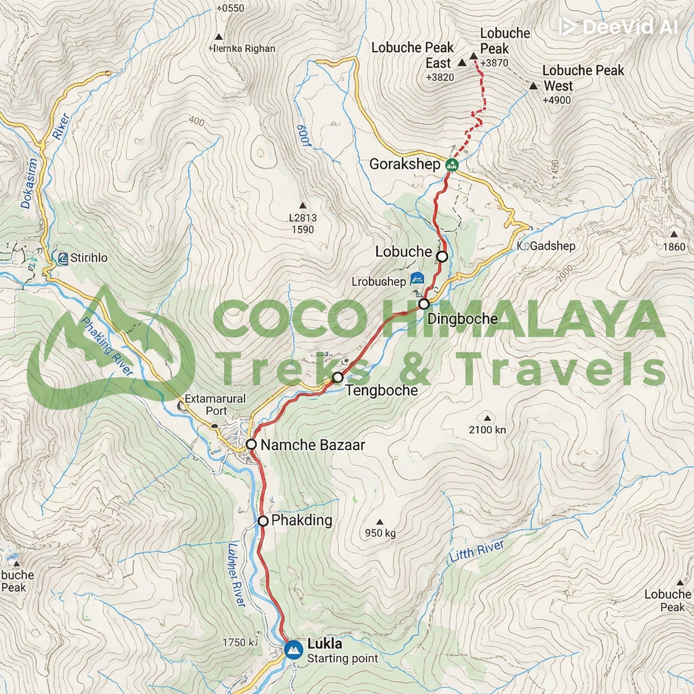

Scenic drive through Trishuli River valleys and terraced hills to reach Syabrubesi (1,460m).
Trek through bamboo forests and riverside trails while gradually gaining altitude to Lama Hotel.
Walk past yak pastures and prayer wheels to reach the historic Langtang Village.
Short scenic trek through a wide alpine valley leading to Kyanjin Gompa and surrounding glaciers.
Acclimatization day with optional hikes to Kyanjin Ri or Tserko Ri for panoramic mountain views.
Descend through familiar villages and forests while enjoying changing landscapes.
Final trekking day descending back to Syabrubesi through lush river valleys.
Drive back to Kathmandu, concluding the Langtang Valley trekking adventure.

Langtang Valley Trek
is one of the most popular trekking routes in Nepal, known for its
stunning
natural beauty, diverse culture, and breathtaking views of the Himalayas. The trek takes you
through the Langtang National Park, which is home to a variety of flora and fauna, including
the elusive red panda. The trail passes through traditional Tamang villages, where you can
experience the local culture and hospitality. Along the way, you'll be treated to panoramic
views of snow-capped peaks, lush forests, and serene alpine meadows. The highlight of the
trek is reaching Kyanjin Gompa, a picturesque village nestled at an altitude of 3,870
meters.